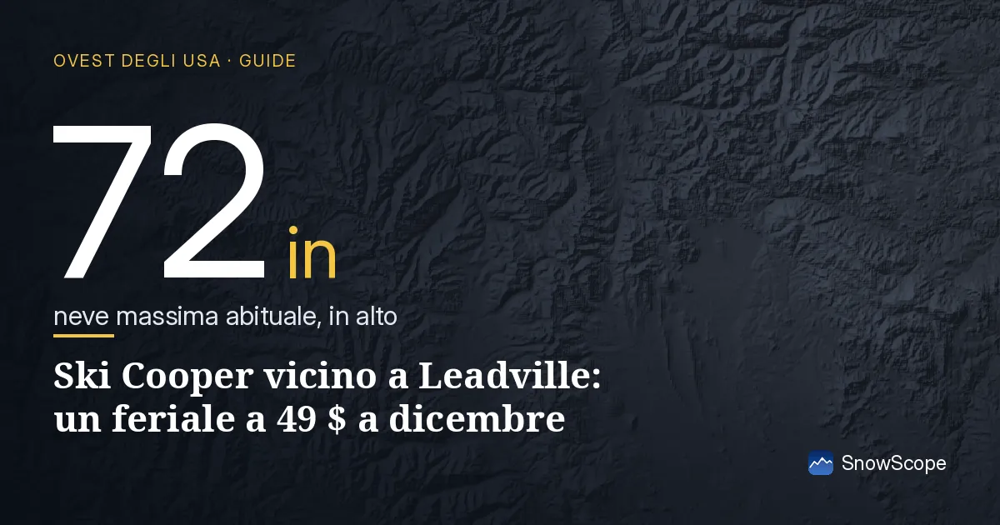

Ski Cooper vicino a Leadville: un feriale a 49 $ a dicembre
Ski Cooper, arroccata sopra i 3.200 m vicino a Leadville, mantiene il pass per adulti nei giorni feriali a 49 dollari per tutto dicembre—il prezzo più basso della regione. La neve qui si accumula costantemente con l'avanzare dell'inverno, raggiungendo profondità sciabili entro la metà del mese anche negli anni più scarsi.
Le previsioni neve in tempo reale per Ski Cooper nell'app SnowScopeAltezza neve, allerte powder e mappa 3D, gratis.
Quota elevata, neve precoce
I 5 impianti di Cooper salgono dalla base a 3.226 m fino alla vetta a 3.579 m attraverso circa 32 km di terreno. Questa quota ha un vantaggio: la neve duratura arriva nella prima settimana di ottobre a metà montagna, quasi un mese prima delle stazioni più basse. Verso la metà di novembre la vetta già conserva tracce di neve.
La neve di inizio stagione è sottile ovunque a Cooper, ma più salite in quota, meglio attacca. La vetta riceve leggermente più neve rispetto a metà montagna, e la base rimane indietro rispetto a entrambe. Questo importa se stai scegliendo quali impianti usare nei giorni di scarsa copertura.

Dicembre qui cresce veloce
La vera forza di Cooper emerge a dicembre. In un tipico 1 dicembre, metà montagna (3.402 m) ha solo 46 cm. Entro il 15 sale a 66 cm, e per Natale raggiunge 79 cm. La vetta guadagna un po' di più a ogni tappa.
Le probabilità sono forti. Verso la metà di dicembre, il 70% degli inverni nei nostri 46 anni di dati aveva 50 cm o più a metà montagna. Entro Natale, l'80%. Anche in un inverno scarso—il tipo che si verifica un anno su dieci—metà montagna fa comunque una media di 74 cm verso la metà di dicembre, sufficiente per sciare piste preparate in sicurezza.

Il vantaggio dei 49 dollari nei giorni feriali
Per la stagione 2026-27, Ski Cooper mantiene i prezzi ai livelli dell'anno scorso. Un biglietto giornaliero per adulti (età 22-68) costa 49 dollari da lunedì a venerdì escluse le festività, e 99 dollari nei fine settimana e festività. Nessun'altra stazione sciistica del Colorado a questa quota corrisponde a quella tariffa nei giorni feriali.
La strategia è semplice: scia Cooper nei giorni feriali di dicembre e il tuo biglietto dell'impianto diventa il più economico della Front Range. Il traffico nei fine settimana rimane anche più leggero, che importa su una piccola stazione con cinque impianti.
Come si confronta: Loveland e Vail
Loveland, il principale rivale locale di Cooper, siede anch'essa in alto (3.592 m a metà montagna) e accumula neve di dicembre simile: tipicamente 74 cm verso la metà di dicembre. Ma Loveland costa di più. Fino al 13 dicembre, i biglietti online sono 60 dollari e i prezzi alla finestra sono 119 dollari. Dopo, il prezzo alla finestra sale a 159 dollari, con sconti limitati in prevendita. Il pass nei giorni feriali di Cooper a 49 dollari batte i prezzi di Loveland tutto il mese.
Vail, la stazione più grande della regione, siede più in basso (2.989 m a metà montagna) e riceve meno neve: tipicamente 62 cm verso la metà di dicembre. Per gli sciatori di inizio stagione che scelgono solo in base all'altitudine, l'altezza di Cooper le dà un vantaggio su Vail a dicembre.
Gli inverni si sono leggermente assottigliati
Cooper mostra uno spostamento a lungo termine degno di nota. Nei primi 15 inverni dei nostri dati (1980-81 al 1994-95), la profondità tipica a metà montagna il 15 dicembre era 66 cm, con l'80% degli inverni sopra 50 cm. Negli ultimi 15 inverni (2011-12 al 2025-26), quelle cifre sono scese a 60 cm e 53%. Lo scorso inverno ha consegnato solo 42 cm in quella data.
Il trend è reale ma graduale. Cooper rimane sciabile in un tipico giorno di metà dicembre secondo qualsiasi standard storico. Lo spostamento semplicemente significa che la copertura nevosa di inizio stagione è meno garantita di quanto non fosse una volta, quindi pianifica il viaggio per la metà di dicembre o più tardi se la profondità della neve importa al tuo viaggio.
Logistica e freddo
Leadville siede a 3.094 m—già abbastanza alta da causare effetti di altitudine. Se stai volando da livello del mare, dormi una notte in città prima di sciare intensamente. Tennessee Pass (US-24), l'accesso principale dalla Front Range, può diventare ghiacciato e ventoso in inverno; porta catene e controlla le condizioni prima di partire.
Il freddo di inizio stagione è reale qui. Le mattine di dicembre possono scendere a -23 °C o più. Porta strati più caldi di quanto ti aspetti, e guarda il fattore di raffreddamento del vento in vetta. Il premio è sciare in alto, presto nella stagione, a un prezzo che rende il viaggio conveniente.
Consigli per sciatori
- Prenota la tua visita nei giorni feriali per la metà di dicembre o più tardi per massimizzare la profondità della neve mantenendo il prezzo di 49 dollari.
- Scia gli impianti a metà montagna e in vetta; salta la base all'inizio della stagione quando le rocce potrebbero affiorare attraverso la copertura sottile.
- Dormi una notte a Leadville prima di sciare per adattarti all'altitudine superiore a 3.200 m; la disidratazione e l'esaurimento arrivano velocemente a questa quota.
- Porta catene da pneumatico per Tennessee Pass e controlla i rapporti stradali prima di guidare dalla Front Range in inverno.
- Prepara strati di abbigliamento per il freddo: il fattore di raffreddamento del vento di inizio stagione a 3.579 m può essere severo anche quando le temperature sembrano miti a quote più basse. Controlla il bollettino del Colorado Avalanche Information Center se hai intenzione di sciare fuori pista: https://avalanche.state.co.us/
Su questi numeri
Le altezze neve delle località sono la neve più alta sui pendii superiori alla data indicata; sono stime per un'area, non una misura in un punto. Le previsioni possono cambiare. Leggi sempre il bollettino valanghe ufficiale prima del fuoripista.
Bollettini valanghe ufficiali: Colorado Avalanche Information Center
Cita questo articolo
Per ricerca, didattica o stampa: numeri e grafici sono liberamente riutilizzabili con licenza CC BY 4.0 citando così.
SnowScope (2026), Ski Cooper vicino a Leadville: un feriale a 49 $ a dicembre, https://snowscope.app/blog/it/2026/11/ski-cooper-leadville-december-49-dollar-weekday.html, consultato il 2026-11-15
SnowScope (Atlas Labs). (2026, November 15). Ski Cooper vicino a Leadville: un feriale a 49 $ a dicembre. SnowScope snow reports. https://snowscope.app/blog/it/2026/11/ski-cooper-leadville-december-49-dollar-weekday.html
BibTeX
@misc{snowscope2026skicooperleadvilledecemb,
author = {{SnowScope (Atlas Labs)}},
title = {Ski Cooper vicino a Leadville: un feriale a 49 $ a dicembre},
year = {2026},
month = nov,
howpublished = {\url{https://snowscope.app/blog/it/2026/11/ski-cooper-leadville-december-49-dollar-weekday.html}},
note = {Published 2026-11-15 09:34 UTC; accessed 2026-11-15}
}· CC BY 4.0 · Metodi, dati e strumenti →
Ski Cooper: neve e temperatura per quota, quest'inverno vs lo scorso (strumenti) →
Segui Ski Cooper
Gratis: un messaggio quando arriva la neve e il meteo ogni mattina.